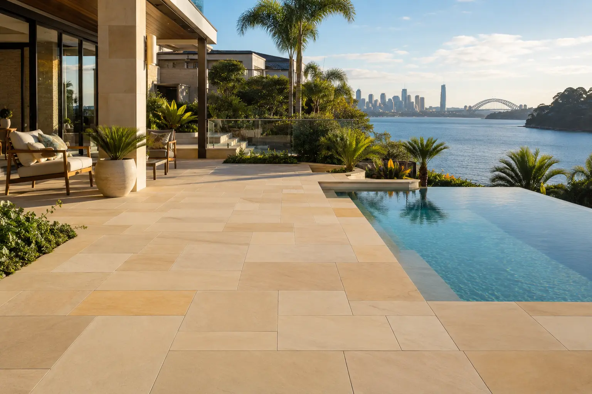
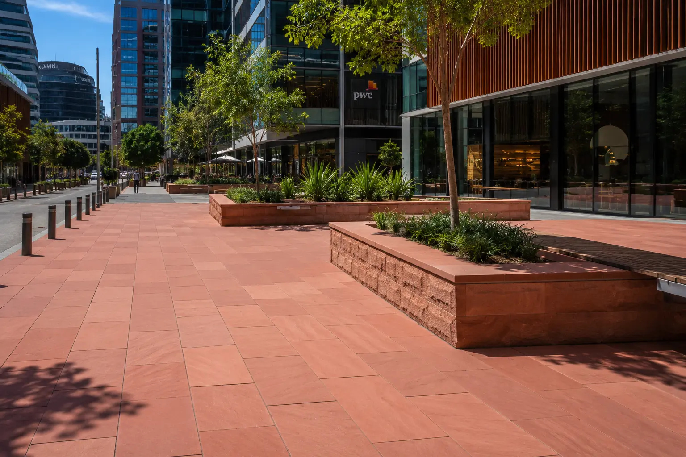
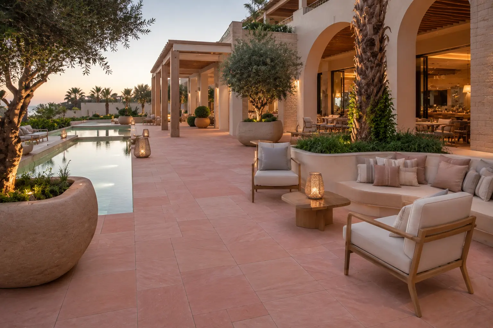
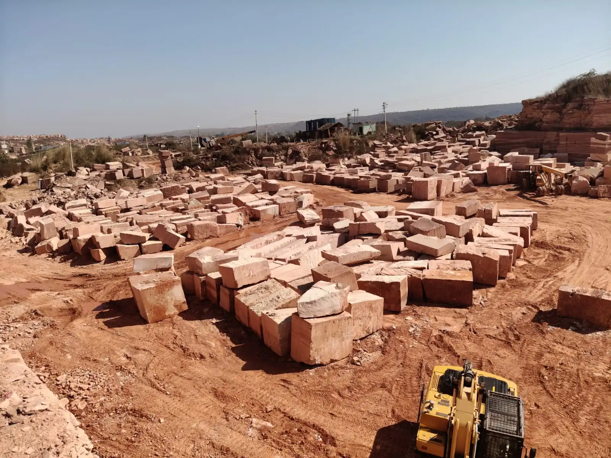
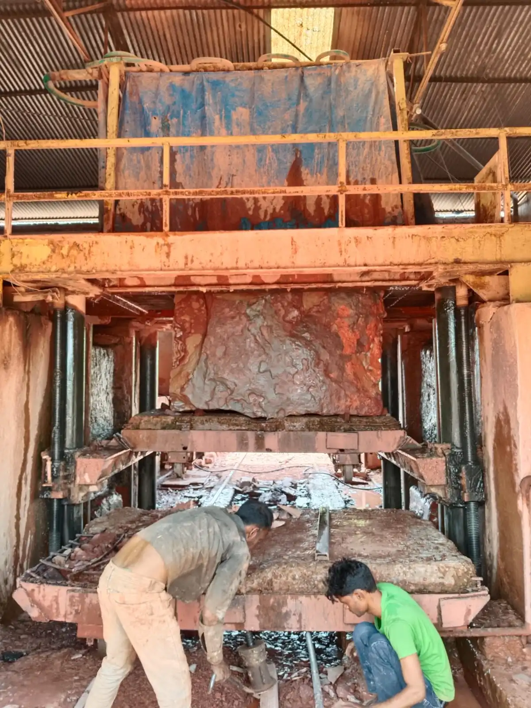
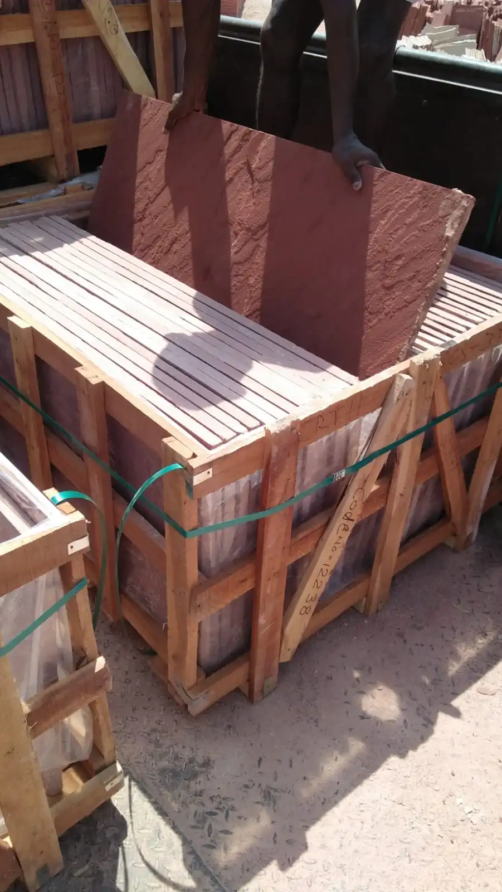

Premium Indian Sandstone for Residential Construction, Commercial Developments and Landscape Architecture Projects Across Australia.
ANAY Premium Stone supplies Dholpur Beige Sandstone, Dholpur Red Sandstone and Bansi Paharpur Pink Sandstone to landscape contractors, architects, builders, garden designers, stone importers and construction companies across Australia.
Get Pricing & SamplesServing Architects, Builders, Importers & Developers Across Australia
Rajasthan Based Production
Export Quality Standards
Project Specific Sizes
Worldwide Shipping Support
Australia has a strong demand for premium natural stone used in luxury residential construction, commercial developments, hospitality projects, public infrastructure and landscape architecture. Indian sandstone is widely specified for outdoor living spaces, paving, pool surrounds and architectural applications across Australia.
As a trusted sandstone supplier in Australia, ANAY Premium Stone supplies premium Indian sandstone for architects, builders, landscape designers, developers, distributors and stone importers throughout Australia.
Our sandstone collections include Dholpur Beige Sandstone, Dholpur Red Sandstone and Bansi Paharpur Pink Sandstone, available in slabs, paving, tiles, wall cladding and custom project specifications.
These sandstone products are widely used in luxury residences, commercial developments, landscape architecture, outdoor living spaces, pool decks, walkways, plazas and hospitality projects across Australia.
ANAY Premium Stone supports Australian buyers through manufacturing, quality inspection, export packaging and professional supply coordination directly from Rajasthan, India.
ANAY Premium Stone operates as a Quarry Owner, Manufacturer, Processor, Supplier, Wholesaler and Exporter of premium Rajasthan sandstone.
This integrated supply chain allows Australian buyers to source sandstone directly from production, ensuring quality consistency, competitive pricing and reliable project supply.
Architects, builders, developers, landscape designers, distributors and stone importers across Australia require reliable natural stone suppliers capable of delivering consistent quality, professional service and dependable export support. ANAY Premium Stone supplies premium Indian sandstone tailored to the requirements of Australian construction and landscape projects.
As a sandstone manufacturer based in Rajasthan, India, we provide direct access to some of India's most respected sandstone varieties, including Dholpur Beige Sandstone, Dholpur Red Sandstone and Bansi Paharpur Pink Sandstone.
Our access to premium sandstone sources enables consistent material selection, colour consistency and reliable supply for residential, commercial and landscaping projects.
Every order undergoes careful inspection during production to ensure dimensional accuracy, finish consistency and compliance with project specifications.
Products are packed using export-grade packaging methods designed to minimise damage during transportation, handling and container shipment.
We supply sandstone slabs, tiles, paving, wall cladding, pool coping, kerbstones, steps and customised architectural stone products according to project requirements.
From landscaping projects and garden developments to commercial projects and public spaces, ANAY Premium Stone supports Australian buyers with premium sandstone solutions designed for durability, beauty and long-term performance.
Premium Collection

Dholpur Beige Sandstone is widely specified for luxury residential construction, commercial developments and landscape architecture projects throughout Australia.
Its warm beige colour, refined texture and architectural versatility make it an ideal natural stone for modern homes, premium outdoor living spaces, hospitality projects and public developments.
ANAY Premium Stone supplies premium quality Dholpur Beige Sandstone in slabs, paving, tiles, wall cladding, pool coping, steps and custom-cut project specifications for Australian buyers.
The stone is particularly suitable for luxury home facades, entrance pathways, pool decks, garden landscapes, courtyards and architectural hardscape projects where durability and timeless aesthetics are essential.
Architects, builders and landscape designers across Australia value Dholpur Beige Sandstone for its consistent appearance, durability and suitability for premium residential and landscape projects.
Explore our Dholpur Beige Sandstone collection, finishes and export solutions for Australia projects.
Premium Collection

Dholpur Red Sandstone is widely used in commercial architecture, public developments and large-scale construction projects throughout Australia.
Its rich natural red colour creates a strong architectural statement while delivering the durability and weather resistance required for demanding exterior applications.
ANAY Premium Stone supplies premium quality Dholpur Red Sandstone in slabs, paving, wall cladding, steps, coping stones and project-specific dimensions for Australian buyers.
The stone is suitable for universities, civic buildings, hospitality projects, commercial developments, public plazas and landscape architecture where long-term performance and visual impact are important.
Architects and developers appreciate Dholpur Red Sandstone for its distinctive appearance, strength and ability to complement both modern and traditional architectural styles.
Explore our Dholpur Red Sandstone collection, finishes and export solutions for projects across Australia.
Premium Collection

Bansi Paharpur Pink Sandstone is one of India's most prestigious natural stones and is increasingly specified for luxury landscape architecture, hospitality developments and high-end residential projects across Australia.
Its elegant pink colour, fine-grained texture and timeless appearance make it an ideal choice for architects and designers seeking distinctive natural stone solutions.
ANAY Premium Stone supplies premium quality Bansi Paharpur Pink Sandstone in slabs, paving, wall cladding, coping stones, steps and custom project dimensions for Australian buyers.
The stone is widely used in luxury resorts, boutique hotels, residential estates, landscape architecture projects, outdoor living environments and premium commercial developments.
Its excellent durability, weather resistance and architectural elegance allow it to perform beautifully in both contemporary and classical design applications.
Explore our Bansi Paharpur Pink Sandstone collection, finishes and export solutions for projects across Australia.
Indian sandstone is widely used throughout Australia for luxury residential construction, commercial developments, landscape architecture, hospitality projects and public spaces.
Sandstone is widely used for luxury homes, outdoor entertaining areas, garden pathways and premium residential developments throughout Australia.
Natural sandstone is specified for commercial buildings, mixed-use developments and architectural projects.
Hotels, resorts and tourism developments use sandstone for premium indoor and outdoor applications.
Municipal projects use sandstone for plazas, pathways, public parks and community spaces.
Dholpur Beige Sandstone is highly suitable for pool surrounds, patios, courtyards and outdoor entertaining areas popular throughout Australia.
Sandstone paving, wall cladding and landscape features are widely used in residential and commercial landscape projects.
Australian buyers can request samples, project-specific quotations and container-load pricing. Our team supports both full container and project-based sandstone supply requirements with export documentation and shipment coordination.
We support container shipments to major Australian ports including Sydney, Melbourne, Brisbane, Perth and Adelaide, helping importers and project suppliers manage reliable sandstone procurement from India.
ANAY Premium Stone follows a structured export process to ensure consistent quality, secure packaging and reliable delivery for construction, landscape and architectural projects across Australia.
From sandstone quarries in Rajasthan to construction, landscape and architectural projects across Australia, ANAY Premium Stone manages the complete supply process including sourcing, manufacturing, quality inspection, export packaging and shipment coordination.

ANAY Premium Stone works with premium sandstone sources in Rajasthan, India's leading natural stone region. Access to quality raw materials supports consistent colour selection, reliable availability and professional supply for international projects.

Our manufacturing process includes cutting, processing and inspection to meet project-specific requirements. We support architects, contractors and importers with sandstone products prepared according to project specifications.

Export-grade packaging is used to help protect sandstone during handling, transportation and international shipment. This supports safe delivery for commercial, residential and landscaping projects across Australia.
Australian architects, builders, landscape designers and stone distributors import Indian sandstone because of its architectural versatility, durability, natural beauty and suitability for residential, commercial and public space projects.
ANAY Premium Stone supplies premium Indian sandstone for residential construction, commercial developments, hospitality projects, public spaces and landscape architecture throughout Australia. Our sandstone products are suitable for luxury residences, commercial developments, civic plazas, hotels, resorts, office developments and outdoor living environments requiring durable and architecturally refined natural stone materials.
ANAY Premium Stone supplies premium Indian sandstone for projects throughout Sydney, Melbourne, Brisbane, Perth, Adelaide, Canberra, Gold Coast and other major construction markets across Australia.
Our sandstone products are suitable for architects, landscape designers, builders, stone importers and distributors seeking reliable sandstone supply from India.
ANAY Premium Stone supports container shipments to major Australian ports and works with importers, developers and construction professionals requiring premium sandstone solutions.
ANAY Premium Stone supplies premium Indian sandstone for architects, builders, landscape designers, developers and importers throughout Australia.
Our Dholpur Beige Sandstone, Dholpur Red Sandstone and Bansi Paharpur Pink Sandstone collections are suitable for residential construction, commercial developments, public infrastructure projects, hospitality projects and landscape architecture.
With direct manufacturing, export packaging and international shipment coordination, we help Australian buyers source premium sandstone directly from Rajasthan, India.
ANAY Premium Stone supplies premium Indian sandstone including Dholpur Beige Sandstone, Dholpur Red Sandstone and Bansi Paharpur Pink Sandstone for residential, commercial and landscaping projects across Australia.
Yes. ANAY Premium Stone supports architects, builders, distributors, landscape contractors and stone importers throughout Australia.
Yes. ANAY Premium Stone supplies sandstone directly from Rajasthan, India to buyers across Australia with export packaging, documentation support and shipment coordination.
Yes. Dholpur Beige Sandstone, Dholpur Red Sandstone and Bansi Paharpur Pink Sandstone are widely used for exterior applications including paving, walkways, landscape architecture and commercial developments.
Yes. Dholpur Beige Sandstone is commonly specified for pool surrounds, outdoor living spaces and luxury residential developments because of its durability and natural appearance.
Yes. ANAY Premium Stone supplies sandstone for universities, public plazas, hospitality projects, commercial developments and large-scale landscape architecture projects.
We support container shipments for international buyers and provide export packaging designed for safe overseas transportation.
Yes. Sandstone can be supplied according to project-specific dimensions, finishes and architectural requirements.
Dholpur Beige Sandstone is one of the most popular choices for patios, garden paving, pathways and landscaping projects because of its durability, natural appearance and suitability for outdoor environments.
We supply slabs, tiles, paving stones, wall cladding, coping stones, steps, kerbstones and customised project specifications.
Yes. Products can be manufactured according to project dimensions and architectural requirements.
Dholpur Beige Sandstone is commonly used for luxury villas, hospitality projects, landscape developments, paving and wall cladding.
Dholpur Red Sandstone is used for pathways, facades, feature walls, landscaping and architectural projects requiring a strong natural appearance.
Bansi Paharpur Pink Sandstone is valued for its elegant colour, durability and suitability for premium architectural applications.
Contact ANAY Premium Stone with project details, quantities and specifications. Our team will review your requirements and provide suitable recommendations and pricing.
Dholpur Beige Sandstone, Dholpur Red Sandstone and Bansi Paharpur Pink Sandstone are among the most popular Indian sandstone products for residential construction, commercial architecture, landscape design and hospitality developments across Australia.
ANAY Premium Stone provides direct manufacturing, premium sandstone selection, export packaging, custom production and international shipment coordination for residential, commercial and landscape architecture projects throughout Australia.
Explore our dedicated country-specific sandstone supply pages designed for architects, importers, contractors and project developers across major international markets.
Landscape professionals, architects and builders throughout Australia continue to specify Indian sandstone because of its durability, versatility and natural appearance.
Dholpur Beige Sandstone, Dholpur Red Sandstone and Bansi Paharpur Pink Sandstone are widely used for patios, pathways, landscaping projects and residential developments where long-term performance and aesthetics are important.
Looking for a reliable sandstone supplier for projects in Australia? ANAY Premium Stone supplies premium Indian sandstone for residential developments, commercial projects, landscape architecture, public spaces and hospitality developments throughout Australia.
Contact our export team for pricing, technical specifications, samples and container shipment details.
Email: info@anaypremiumstone.com
Alternate Email: anaypremiumstone@gmail.com
Phone / WhatsApp: +91 77328 65515
Location: Sarmathura, Rajasthan, India
ANAY Premium Stone is a premium sandstone manufacturer and exporter based in Rajasthan, India. We specialize in Dholpur Beige Sandstone, Dholpur Red Sandstone and Bansi Paharpur Pink Sandstone for architectural, landscaping and commercial projects worldwide.